★★★★★
“This is my spot! It's rare to find a place that you can frequent and have such genuinely nice interactions with the people who work there.”
Phylicia M. San Diego, CA · Yelp review
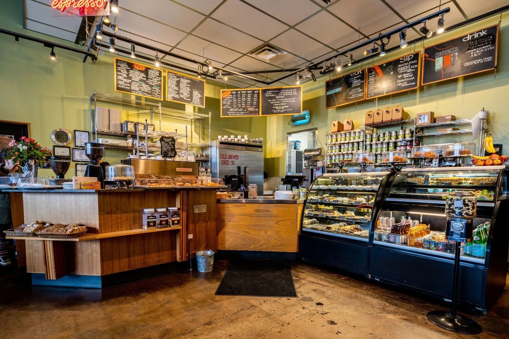
9th & 9th · Salt Lake City
Espresso pulled all day, pastries baked in-house every morning, and a patio that fills with regulars — until 9 pm, every night of the week.
878 E 900 S, Salt Lake City· Mon–Sat 6 am – 9 pm · Sun 7 am – 9 pm· (801) 355-3425
Open since
May 1993Google rating
★ 4.6 · 1,582 reviewsThe bakery
Baked in-house dailyEvery night
Open until 9 pmRegulars' Favorite
Thirty-three years behind the espresso bar will teach you exactly how a latte should taste — house vanilla, earl grey, or a classic. Order it hot at the counter or ahead for pickup.
“The raspberry olive oil cake and earl grey tea latte was perfection!”
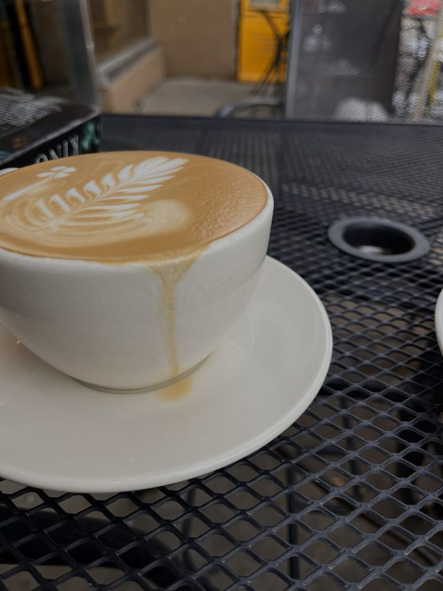
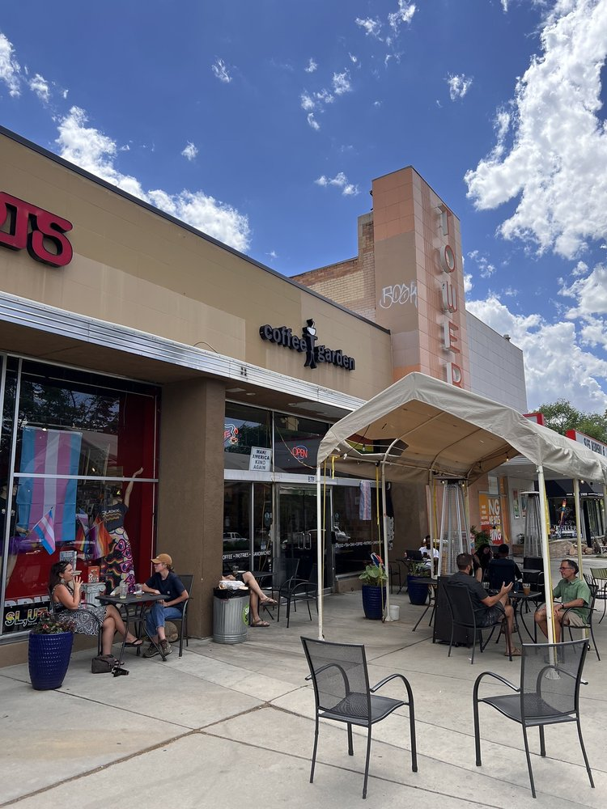
Since May 1993
Alan Hebertson and Dieter Sellmair opened Coffee Garden in May 1993, and it has anchored the 9th & 9th neighborhood ever since — espresso, scratch baking, and rotating local art on the walls.
Everything in the pastry case is made in-house, from almond croissants to hand-made French macarons. In warm weather the patio along 9th South fills with regulars and visitors seven days a week — and a second shop now pours downtown at 254 S Main.
Years at 9th & 9th
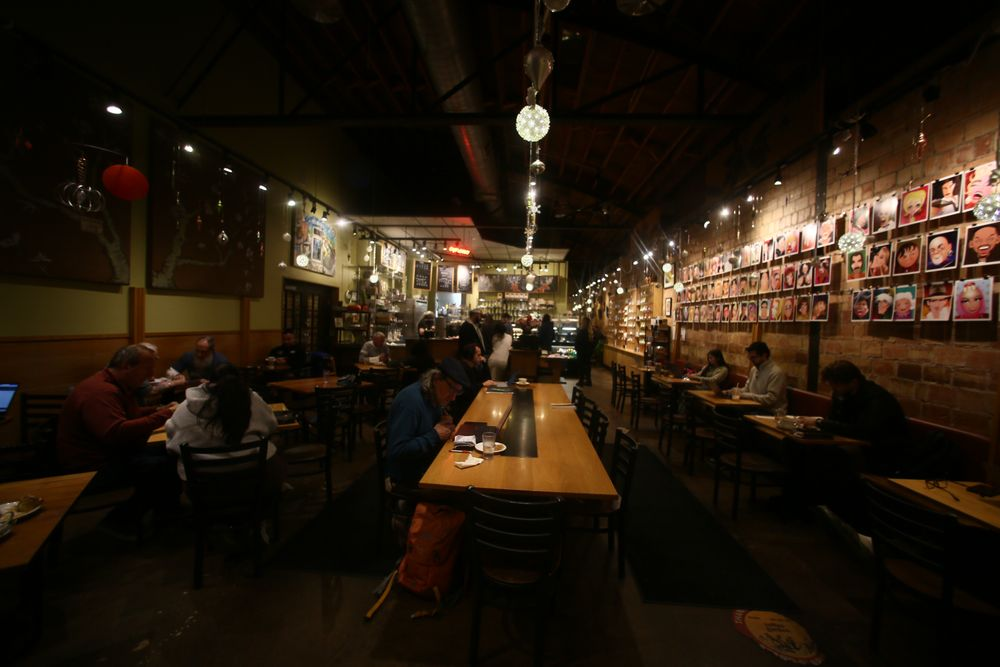
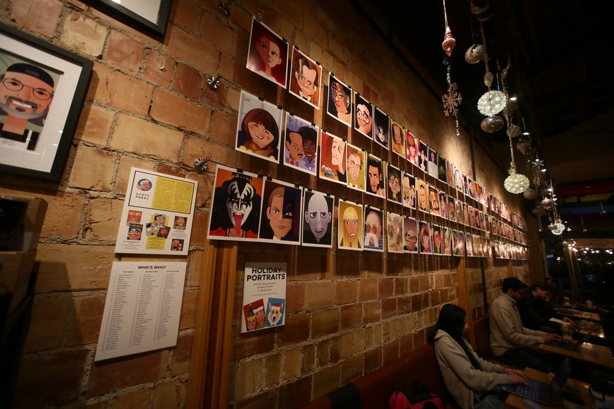
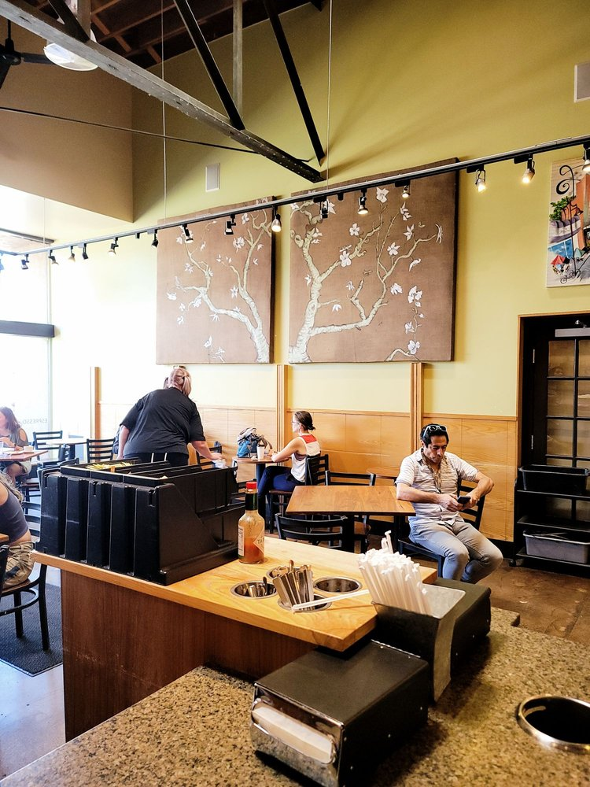
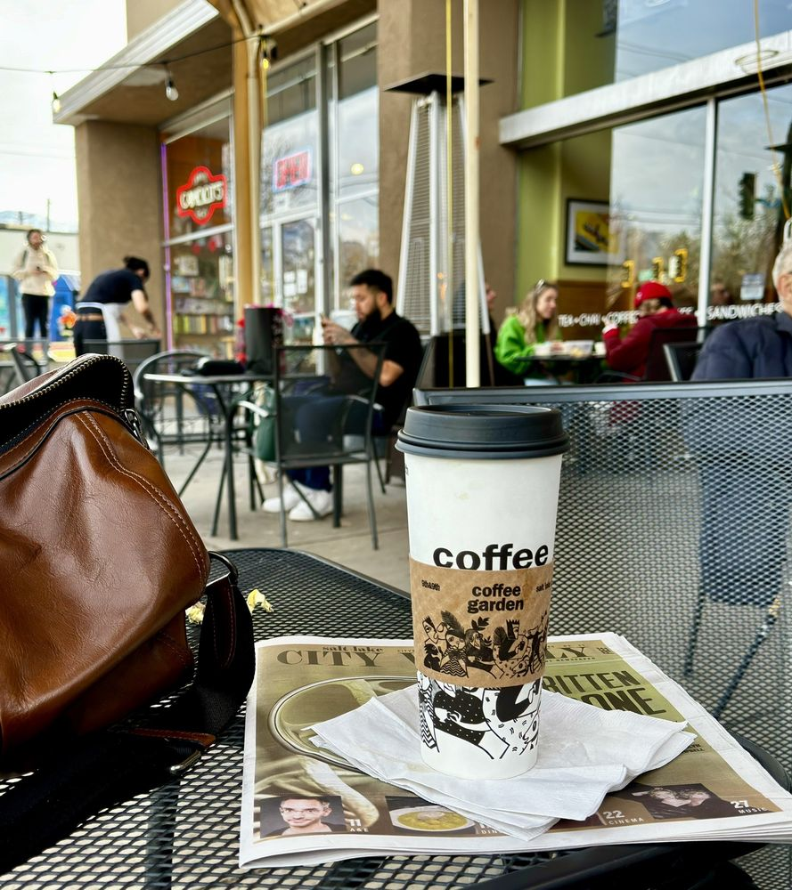
What the neighborhood says
★★★★★
“This is my spot! It's rare to find a place that you can frequent and have such genuinely nice interactions with the people who work there.”
Phylicia M. San Diego, CA · Yelp review
★★★★★
“A legacy of fabulous coffee, pastries and baked goods, wonderful baristas and wait staff. The perfect meeting place 7 days a week.”
Robin P. Salt Lake City, UT · Yelp review
★★★★★
“Their croissants are to die for, specifically the almond croissant. perfect mix of buttery, flakey, and sweet. I have also been loving their cold brew.”
Jenny S. St. George, UT · Yelp review
Visit
Phone
(801) 355-3425Hours
| Monday – Saturday | 6:00 am – 9:00 pm |
| Sunday | 7:00 am – 9:00 pm |
Parking
Small lot behind the shop off 900 South; street spots out front fill fast — most regulars walk or bike in.
Downtown
Second location at 254 S Main St, Salt Lake City.
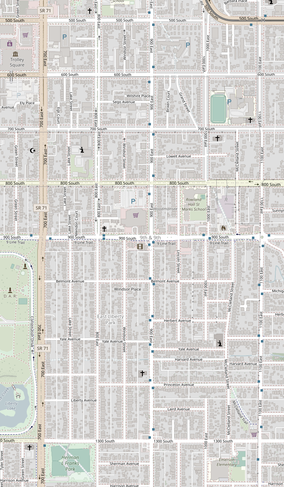
Coffee Garden Map © OpenStreetMap contributorsOn Instagram
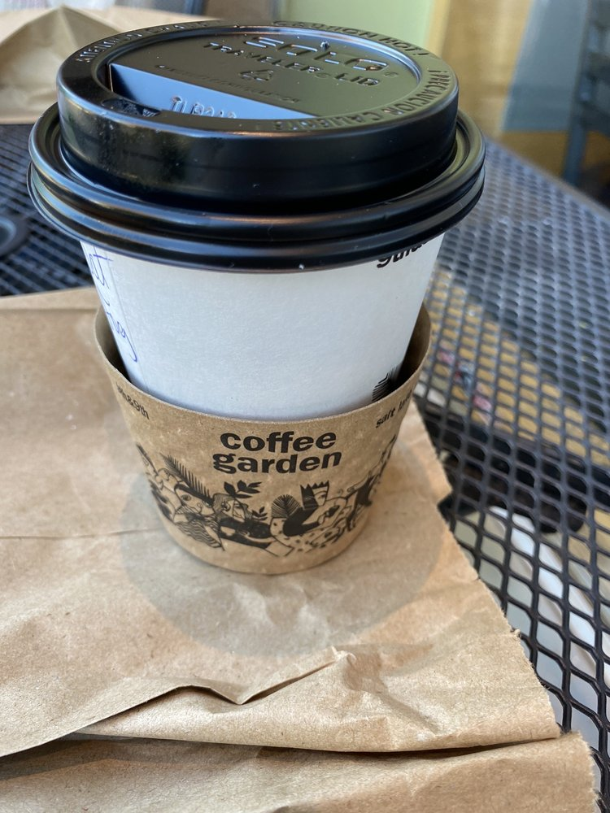
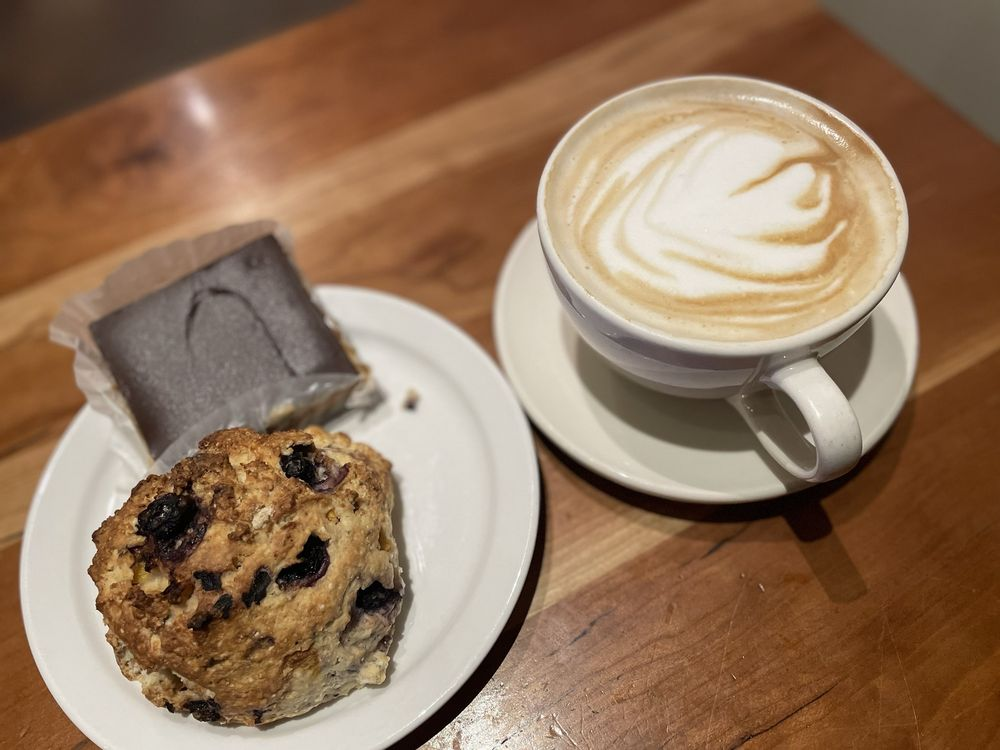
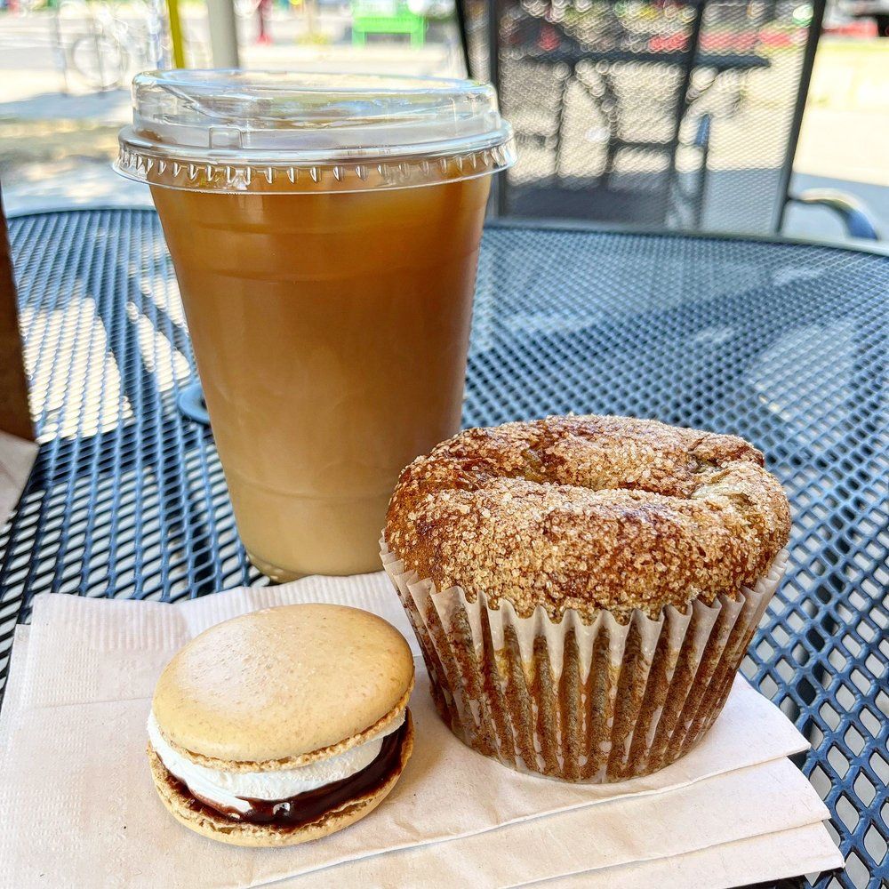
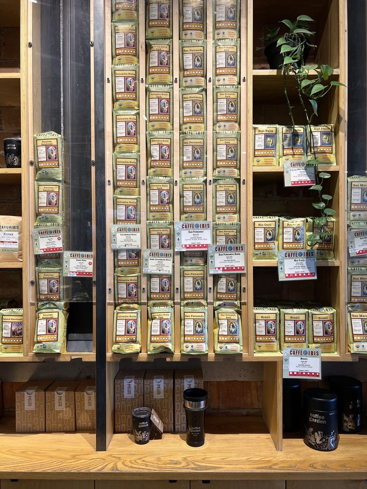